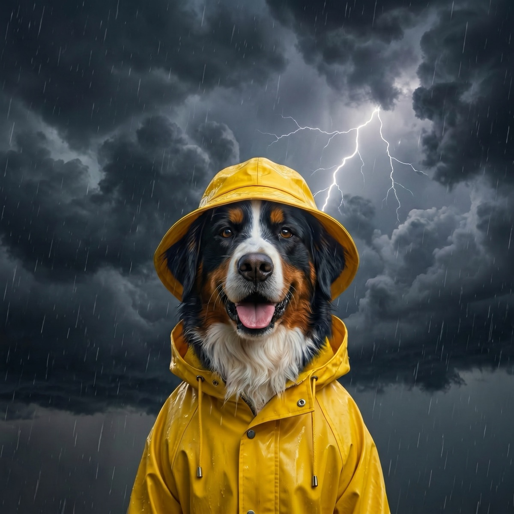

Storm and Hurricane Prep for Pets: The Complete Checklist
The worst time to figure out where the cat carrier is? When the sirens are already going. Storm prep for pets is one of those chores that takes an afternoon once, then quietly saves you during the most stressful 48 hours of the year. Here is the whole plan, checklist first.
The pet go-bag: pack it now
Both the American Veterinary Medical Association and the ASPCA's disaster preparedness guide recommend building an evacuation kit long before you need it. Keep it somewhere grabbable, and put a note on your calendar to rotate the food and meds every few months. Pack:
- Food and water: at least 3 to 7 days of food per pet, bottled water, bowls, and a can opener if needed
- Medications: a two-week supply, plus written dosing instructions
- Records: vaccination records, microchip number, vet contact info, and a current photo of you with your pet (proof of ownership if you get separated), in a waterproof bag or saved to your phone
- Restraint: spare leash, collar with ID tags, and a harness
- Sanitation: litter and a disposable tray for cats, waste bags for dogs, paper towels, and a small bottle of dish soap
- Comfort: a familiar blanket or toy, and long-lasting chews for dogs
- First aid: a basic pet first-aid kit, plus gauze and self-adhering bandage wrap
ID and microchips: your best insurance
Storms are when pets get lost. Doors blow open, fences come down, and a panicked animal can bolt in seconds. Before storm season, confirm the collar tag has your current cell number, verify your pet's microchip registration is up to date with your current address and phone, and take a fresh, clear photo of each pet. If your pet is not chipped yet, this is the nudge: a collar can slip off, a chip cannot.
Carriers: every pet, every time
Each pet needs its own carrier or crate, sized so they can stand and turn around, labeled with your name and phone number. Cats especially should ride out evacuations in a carrier, not loose in the car. If your cat only sees the carrier on vet days, leave it out with a blanket inside for a few weeks so it stops being the scary box.

Plan the evacuation before you need it
The single most important rule from every disaster agency: if it is not safe for you, it is not safe for your pets. Never evacuate without them. But many emergency shelters do not accept animals, so the destination has to be figured out in advance:
- Search now for pet-friendly hotels along your likely evacuation routes and save the numbers.
- Ask friends or family outside the risk zone whether they could host you and your animals.
- Note which local shelters or fairgrounds accept pets during declared emergencies; your county's emergency management page usually lists them.
- Line up a backup: a neighbor who can grab your pets if a storm hits while you are at work, and who knows where the go-bag lives.
If you live in hurricane country, the National Weather Service's hurricane safety guidance is worth a read every June: knowing the difference between a watch and a warning tells you exactly when to move from "prepared" to "packing the car."
Keeping pets calm when the storm hits
If you are sheltering at home, set up a safe room before the weather arrives: an interior room away from windows, with the carriers, water, litter, and something that smells like you. Bring outdoor pets in early, well before conditions turn. During the storm, stay matter-of-fact; pets read your energy more than the thunder itself. For dogs who fall apart at the first rumble, a snug pressure wrap can take the edge off (see our thundershirt roundup), and our guide to thunderstorm anxiety in dogs covers the longer-term desensitization work. If your dog needs prescription help, talk to your vet before storm season, not during it, and consider a practice run using the tips in our spring storm prep guide.
The earlier you know a storm is coming, the calmer all of this goes. WeatherPets helps here in a small, pleasant way: your pet's morning report flags incoming storms days out, so the prep happens over coffee instead of in a panic.
After the storm: the hazards nobody mentions
The all-clear is not all clear for animals. Keep dogs leashed and cats indoors for the first days after a big storm. Familiar scent landmarks are gone, and disoriented pets get lost easily even in their own neighborhood. Watch the ground for downed power lines, broken glass, and debris. Standing water can hide sharp objects and carry bacteria and chemicals, so do not let dogs drink from or wade in flood puddles. Check your fence line before any off-leash yard time, and give everyone a few low-key days: stress lingers in pets just like it does in people.
One afternoon of prep, one bag by the door, one plan everyone in the house knows. That is the whole assignment, and your pets are worth every minute of it.